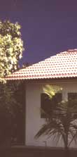
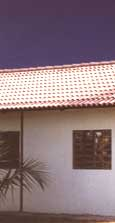
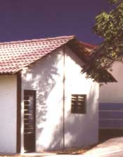
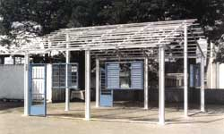
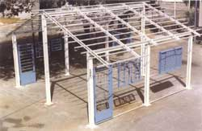
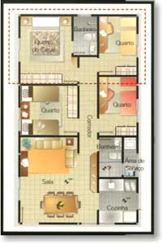
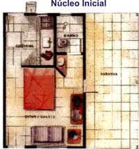
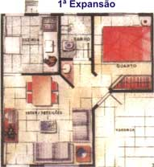
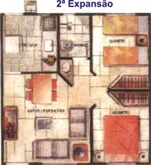

|
|
 |
CASAS PRÉ-FABRICADAS A Fergel também produz casas populares totalmente pré-moldadas a frio em perfis de aço resistentes à corrosão atmosférica. Todo o engradamento e as colunas funcionam como guias para o alinhamento da alvenaria. É simples e rápido de construir. O prazo de finalização do colunamento é de três a cinco dias.    É mais barato As colunas em aço e o engradamento economizam em até 20% o custo final da construção. A redução do tempo de conclusão da obra está agregada à economia no custo final da obra. O tempo reduzido para conclusão, permite considerar uma economia agregada no custo final da obra. É fácil de expandir A casa pré-fabricada Fergel com estrutura metálica permite expansões rápidas, podendo atingir, a partir do núcleo inicial de 36m², um acréscimo de até 63m². • As expansões básicas estão dispostas nas plantas ao lado: Núcleo inicial: um quarto, cozinha e banheiro 1ª expansão: uma sala 2º expansão: um quarto
Última expansão = 63m² Três quartos e uma suíte.    
|
| Fergel Indústria e Comércio de Ferro e Aço da Amazônia Ltda. © 2006-2011 • Webdesign: Carlos Palácio |